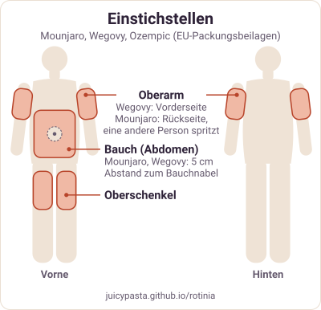

Kostenlos, ohne Werbung, ohne Anmeldung
Auch auf: English · Français · Español · Português
Auf Englisch, ein Pen pro Seite: Mounjaro · Wegovy · Ozempic · Zepbound
Wo spritzt man Mounjaro, Wegovy und Ozempic? Einstichstellen laut Packungsbeilage
Kurz gesagt: Alle drei werden unter die Haut gespritzt, in den Bauch, den Oberschenkel oder den Oberarm, nie in eine Vene oder einen Muskel. Bei Mounjaro und Wegovy verlangt die Packungsbeilage am Bauch 5 cm Abstand zum Bauchnabel. Bei Mounjaro ist es die Rückseite des Oberarms, und dort sollte eine andere Person spritzen. Keine Packungsbeilage nennt eine einzelne beste Stelle.
Mounjaro enthält Tirzepatid, Wegovy und Ozempic enthalten Semaglutid. Alle drei werden oft einfach Abnehmspritze genannt, aber jeder Pen hat seine eigene Packungsbeilage. Diese Seite zeigt, was in jeder steht, auch zur Frage Bauch oder Oberschenkel.
Der Planer unten merkt sich den Wechsel für dich: Tippe die Stelle an, die du zuletzt genutzt hast, und er zeigt dir die nächste.
Planer für den Wechsel der Einstichstelle
Tippe die Stelle an, die du zuletzt genutzt hast. Wenn du dich an frühere erinnerst, tippe sie der Reihe nach an, von der ältesten bis zur neuesten.
Deine linke Seite ist in beiden Figuren links.
Bauch (Mounjaro und Wegovy: 5 cm Abstand zum Nabel)
Oberschenkel (Vorderseite)
Oberarme (Mounjaro: Rückseite, eine andere Person spritzt)
Deine Stellen, die neueste zuerst: noch keine.
Stellen, die du nutzt (6 von 8)
Der Planer schlägt nur ausgewählte Stellen vor. Wie die App Rotinia beginnt er mit den vier Stellen am Bauch und den beiden Oberschenkeln; wähle die Oberarme aus, wenn du auch dort spritzt.
Was du antippst, wird nur im lokalen Speicher dieses Browsers auf diesem Gerät gespeichert, damit der Planer es beim nächsten Mal noch weiß. Es wird nichts gesendet. Nimm den Haken weg, um nichts mehr zu speichern, oder lösche alles mit dem Knopf Meine Stellen löschen.
Lass Rotinia den Wechsel übernehmen
Rotinia ist eine App, in der du deine GLP-1-Spritzen festhältst, auch auf Deutsch. Jedes Mal, wenn du eine Spritze einträgst, schlägt sie die nächste Stelle nach derselben Regel vor, und ihre Körperkarte zeigt, wann du welche Stelle zuletzt genutzt hast. Erinnerungen und das Protokoll für Gewicht und Nebenwirkungen sind für immer kostenlos, ohne Konto und ohne Werbung, und alles bleibt auf deinem Handy.
Rotinia ist ein Protokoll, nie ein Dosierungswerkzeug: Die App hält fest, was du spritzt, und sagt dir nicht, welche Dosis du nehmen sollst.
Bald im App Store für iPhone. Über Rotinia (auf Englisch)
Wo spritzt man Mounjaro (Tirzepatid)?
Die EU-Packungsbeilage von Mounjaro KwikPen sagt: „Mounjaro wird unter die Haut (subkutane Injektion) Ihres Bauchbereiches (Abdomen) mindestens 5 cm vom Bauchnabel entfernt, Ihres Oberschenkels oder in die Rückseite Ihres Oberarms injiziert.“ Und weiter: „Eine andere Person sollte Ihnen helfen, wenn Sie in die Rückseite Ihres Oberarms injizieren möchten.“
Die Bedienungsanleitung des Pens fasst es so zusammen:
- „Sie oder eine andere Person können das Arzneimittel in Ihren Oberschenkel oder Ihren Bauch (Abdomen), mindestens 5 cm vom Bauchnabel entfernt, injizieren.“
- „Eine andere Person sollte Ihnen die Injektion in die Rückseite Ihres Oberarmes geben.“
- „Wechseln Sie Ihre Injektionsstelle jede Woche. Sie können dieselbe Körperregion nutzen, aber stellen Sie sicher, dass Sie in dieser Körperregion eine andere Injektionsstelle auswählen.“
Die Fachinformation ergänzt: „Die Injektionsstellen sollten bei jeder Dosis gewechselt werden.“ Wenn du dir auch Insulin spritzt, sagt die Packungsbeilage: „Wenn Sie sich auch Insulin spritzen, wählen Sie für diese Injektion eine andere Injektionsstelle.“
Diese Seite zitiert für Mounjaro nur die EU-Packungsbeilage, die Bedienungsanleitung und die Fachinformation von Mounjaro KwikPen. Wenn dein Tirzepatid in einem anderen Pen oder einer anderen Form kommt, halte dich an die Anleitung, die dabei ist.
Was das US-Etikett von Mounjaro sagt, auf Englisch: Mounjaro injection sites.
Wo spritzt man Wegovy (Semaglutid)?
Die Packungsbeilage von Wegovy FlexTouch sagt: „Wegovy wird als Injektion unter die Haut gespritzt (subkutane Injektion). Spritzen Sie das Arzneimittel nicht in eine Vene oder einen Muskel.“ Und: „Die besten Stellen für die Injektion sind die Vorderseite des Oberarms, die Oberschenkel oder der Bauch.“
Die Bedienungsanleitung des Pens sagt zwei Dinge, die bei Ozempic fehlen:
- Abstand zum Nabel: „Wählen Sie Ihren Oberarm, Oberschenkel oder Bauch (halten Sie einen Abstand von 5 cm zum Bauchnabel).“
- Wechsel: „Sie können in dieselbe Körperregion injizieren, aber achten Sie darauf, dass es nicht die gleiche Stelle ist wie beim letzten Mal.“
Die Fachinformation sagt: „Es wird subkutan in das Abdomen, den Oberschenkel oder den Oberarm injiziert. Die Injektionsstelle kann gewechselt werden.“
Was das US-Etikett von Wegovy sagt, auf Englisch: Wegovy injection sites.
Wo spritzt man Ozempic (Semaglutid)?
Ozempic hat denselben Wirkstoff wie Wegovy, in einem anderen Pen und mit eigener Packungsbeilage: „Ozempic enthält den Wirkstoff Semaglutid.“ Die Packungsbeilage des Ozempic-Fertigpens sagt: „Ozempic wird als Injektion unter die Haut gespritzt (subkutane Injektion). Spritzen Sie das Arzneimittel nicht in eine Vene oder einen Muskel.“ Und sie nennt die Stellen: „Die am besten geeigneten Stellen für das Geben der Spritze sind die Vorderseite Ihrer Oberschenkel, die Vorderseite Ihres Bauches (Abdomen) oder Ihr Oberarm.“
Die Fachinformation sagt: „Ozempic soll subkutan in das Abdomen, den Oberschenkel oder den Oberarm injiziert werden. Die Injektionsstelle kann ohne Dosisanpassung geändert werden.“
Die Packungsbeilage des Ozempic-Fertigpens sagt nichts zum Wechseln der Stelle und nichts zum Abstand zum Nabel. Diese Seite zitiert für Ozempic nur den Fertigpen; die Ozempic-Fertigspritze hat eine eigene Packungsbeilage mit eigenen Angaben.
Was das US-Etikett von Ozempic sagt, auf Englisch: Ozempic injection sites.

| Medikament | Bauch | Oberschenkel | Oberarm |
|---|---|---|---|
| Mounjaro (Tirzepatid) | Ja, mindestens 5 cm vom Nabel | Ja | Rückseite, eine andere Person spritzt |
| Wegovy (Semaglutid) | Ja, 5 cm Abstand zum Nabel | Ja | Ja (Vorderseite) |
| Ozempic (Semaglutid) | Ja (Vorderseite) | Ja (Vorderseite) | Ja |
Bauch oder Oberschenkel: Wo spritzt man am besten?
Keine der drei Packungsbeilagen nennt eine einzelne beste Stelle. Die Fachinformation von Mounjaro sagt: „Bei subkutaner Gabe von Tirzepatid in Bauch, Oberschenkel oder Oberarm wurde jeweils eine ähnliche Exposition erreicht.“ Die von Wegovy und Ozempic sagen dasselbe für Semaglutid: „Mit einer subkutanen Verabreichung von Semaglutid in das Abdomen, den Oberschenkel oder den Oberarm wurde eine ähnliche Exposition erreicht.“ Exposition heißt hier: wie viel Wirkstoff im Blut ankommt.
Bauch oder Oberschenkel ist laut Packungsbeilage also keine Frage von besser oder schlechter: Beide sind genannt, bei Mounjaro wie bei Wegovy. Die Packungsbeilagen von Mounjaro und Wegovy verlangen nur, dass es nicht dieselbe Stelle wie beim letzten Mal ist.
Einstichstelle wechseln: was die Packungsbeilagen sagen
Am deutlichsten ist Mounjaro: Die Stelle wird mit jeder Spritze gewechselt, auch wenn du in derselben Körperregion bleibst. Bei Wegovy darf es dieselbe Körperregion sein, nur nicht die gleiche Stelle wie beim letzten Mal. Die Packungsbeilage des Ozempic-Fertigpens hat keine solche Regel. Das US-Etikett von Ozempic verlangt bei jeder Spritze eine andere Stelle; das steht auf der englischen Seite, Ozempic injection sites.
Wechseln heißt nicht, dass du die Körperregion wechseln musst: Vier Stellen am Bauch geben dir schon jedes Mal eine andere Stelle.
So wechselst du: ein einfaches Schema mit 8 Stellen
Teile die drei Bereiche in acht Stellen und nimm bei jeder Spritze die nächste; am Ende fängst du wieder vorne an:
- Bauch oben links
- Bauch oben rechts
- Bauch unten links
- Bauch unten rechts
- Linker Oberschenkel
- Rechter Oberschenkel
- Linker Oberarm
- Rechter Oberarm
Halte am Bauch 5 cm Abstand zum Nabel, so wie es Mounjaro und Wegovy verlangen. Wenn du die Arme nicht nutzt (bei Mounjaro sollte dort eine andere Person spritzen), bleiben sechs Stellen; wenn du nur den Bauch nutzt, geben dir die vier Stellen dort schon jedes Mal eine andere.
Der Planer oben nutzt die Regel von Rotinia: Die nächste Stelle ist die, die du am längsten nicht genutzt hast, unter den ausgewählten Stellen. Stellen, die du noch nie genutzt hast, kommen zuerst, in der Reihenfolge dieser Liste. Mit zwei oder mehr ausgewählten Stellen schlägt er nie die Stelle vom letzten Mal vor.
Pen-Anleitung: das Wichtigste laut Packungsbeilage
Lies immer die Bedienungsanleitung in der Packung: Sie hat jeden Schritt mit Bildern, und deine Ärztin, dein Arzt oder das medizinische Fachpersonal kann dir zeigen, wie der Pen geht. Hier steht nur der Umgang mit dem Pen, nichts zu Dosen.
Mounjaro KwikPen
- „Waschen Sie Ihre Hände mit Wasser und Seife.“
- „Verwenden Sie für jede Injektion immer eine neue Pen-Nadel, um Infektionen und verstopfte Nadeln zu vermeiden.“
- Vor dem Spritzen wird der Pen entlüftet, wie in der Anleitung beschrieben: „Ihr Pen wurde entlüftet, wenn eine kleine Menge des Arzneimittels aus der Spitze der Pen-Nadel austritt.“
- „Injizieren Sie das Arzneimittel, indem Sie den Dosierknopf bis zum Anschlag durchdrücken. Zählen Sie dann langsam bis 5, während Sie den Dosierknopf gedrückt halten.“
- „Wenn es blutet, nachdem Sie die Nadel aus der Haut ziehen, drücken Sie mit einem Tupfer oder einem Stück Mullbinde leicht auf die Injektionsstelle. Reiben Sie die Stelle nicht.“
- „Bewahren Sie den Pen nicht mit aufgesteckter Nadel auf, um ein Auslaufen, ein Verstopfen der Nadel und den Eintritt von Luft in den Pen zu verhindern.“
Wegovy FlexTouch
- „Benutzen Sie immer für jede Injektion eine neue Nadel.“
- „Überprüfen Sie nur vor Ihrer ersten Injektion bei jedem neuen Pen den Durchfluss von Wegovy.“
- „Stechen Sie die Nadel in Ihre Haut.“ Halte den Injektionsknopf gedrückt, wie es die Anleitung zeigt, und „zählen Sie langsam bis 6“, bevor du die Nadel herausziehst.
- „Wenn an der Injektionsstelle Blut austritt, drücken Sie leicht darauf, um die Blutung zu stoppen.“
- „Bewahren Sie Ihren Pen niemals mit aufgeschraubter Nadel auf.“
- „Setzen Sie die Penkappe nach jedem Gebrauch wieder auf den Pen, um Wegovy vor Licht zu schützen.“
Ozempic-Fertigpen
- „Benutzen Sie immer für jede Injektion eine neue Nadel.“
- „Überprüfen Sie nur vor Ihrer ersten Injektion mit jedem neuen Pen den Durchfluss.“
- „Stechen Sie die Nadel in Ihre Haut, so wie Ihr Arzt oder das medizinische Fachpersonal es Ihnen gezeigt hat.“ Halte den Injektionsknopf gedrückt, bis die Dosisanzeige auf 0 zurückkehrt, und dann: „Zählen Sie langsam bis 6, während Sie den Injektionsknopf gedrückt halten.“
- „Wenn an der Injektionsstelle Blut austritt, drücken Sie leicht darauf.“
- „Setzen Sie die Penkappe nach jedem Gebrauch wieder auf den Pen, um die Lösung vor Licht zu schützen.“
Fragen zu Mounjaro, Wegovy und Ozempic
Wo spritzt man Mounjaro?
Die Packungsbeilage von Mounjaro KwikPen sagt: „Mounjaro wird unter die Haut (subkutane Injektion) Ihres Bauchbereiches (Abdomen) mindestens 5 cm vom Bauchnabel entfernt, Ihres Oberschenkels oder in die Rückseite Ihres Oberarms injiziert.“ An der Rückseite des Oberarms sollte dir eine andere Person helfen.
Mounjaro: Bauch oder Oberschenkel?
Beides geht, die Packungsbeilage nennt beide. Die Fachinformation sagt: „Bei subkutaner Gabe von Tirzepatid in Bauch, Oberschenkel oder Oberarm wurde jeweils eine ähnliche Exposition erreicht.“ Am Bauch gilt: mindestens 5 cm vom Bauchnabel entfernt.
Wo spritzt man Wegovy?
Die Packungsbeilage von Wegovy FlexTouch sagt: „Die besten Stellen für die Injektion sind die Vorderseite des Oberarms, die Oberschenkel oder der Bauch.“ Die Bedienungsanleitung ergänzt: „Wählen Sie Ihren Oberarm, Oberschenkel oder Bauch (halten Sie einen Abstand von 5 cm zum Bauchnabel).“
Wo spritzt man Ozempic?
Die Packungsbeilage des Ozempic-Fertigpens sagt: „Die am besten geeigneten Stellen für das Geben der Spritze sind die Vorderseite Ihrer Oberschenkel, die Vorderseite Ihres Bauches (Abdomen) oder Ihr Oberarm.“ Gespritzt wird unter die Haut, nicht in eine Vene oder einen Muskel.
Muss man bei Mounjaro, Wegovy oder Ozempic die Einstichstelle wechseln?
Bei Mounjaro ja. Die Fachinformation sagt: „Die Injektionsstellen sollten bei jeder Dosis gewechselt werden.“ Bei Wegovy sagt die Bedienungsanleitung: „Sie können in dieselbe Körperregion injizieren, aber achten Sie darauf, dass es nicht die gleiche Stelle ist wie beim letzten Mal.“ Die Packungsbeilage von Ozempic hat keine solche Regel; die Fachinformation sagt: „Die Injektionsstelle kann ohne Dosisanpassung geändert werden.“
Wie funktioniert der Mounjaro-Pen? Die Anleitung kurz
Kurz gesagt, laut Bedienungsanleitung von Mounjaro KwikPen: Hände waschen, Pen und Etikett prüfen, eine neue Pen-Nadel aufsetzen und den Pen entlüften. Dann: „Injizieren Sie das Arzneimittel, indem Sie den Dosierknopf bis zum Anschlag durchdrücken. Zählen Sie dann langsam bis 5, während Sie den Dosierknopf gedrückt halten.“ Jeden Schritt mit Bildern zeigt die Bedienungsanleitung in der Packung.
Protokoll zum Ausdrucken
Ein Blatt für neben deine Pens: Trag das Datum ein und hake jede Spritze ab. Die Spalte mit den Stellen kann sich in der Reihenfolge des Wechsels selbst füllen, beginnend mit der nächsten Stelle aus dem Planer.
Protokoll der Einstichstellen
Jedes Mal eine andere Stelle. Bauch, Oberschenkel oder Oberarm. Halte dich an die Anleitung, die deinem Pen beiliegt.
| # | Datum | Stelle | Notizen |
|---|
Kostenloser Planer und Protokoll: juicypasta.github.io/rotinia/de/wo-spritzt-man-mounjaro-wegovy-ozempic/ · Rotinia ist nicht mit Eli Lilly oder Novo Nordisk verbunden.
Diese Seite ersetzt nicht die Anweisungen deiner Ärztin, deines Arztes oder deiner Apotheke. Halte dich an die Anleitung, die deinem Pen beiliegt, und frag bei Fragen deine Ärztin, deinen Arzt oder in der Apotheke nach. Sie behandelt nur, wo man spritzt und wie man die Stellen wechselt; sie gibt keinen medizinischen Rat und sagt nichts zu Dosen.
Mounjaro ist eine eingetragene Marke von Eli Lilly and Company; Ozempic und Wegovy sind eingetragene Marken von Novo Nordisk. Rotinia ist weder mit Eli Lilly noch mit Novo Nordisk verbunden und wird von keinem der beiden unterstützt.
Quellen
Die Zitate stammen aus den EU-Produktinformationen auf Deutsch (Fachinformation, Etikettierung und Gebrauchsinformation mit Bedienungsanleitung), wie die Europäische Arzneimittel-Agentur (EMA) sie veröffentlicht, abgerufen am 2026-11-28. Für zentral zugelassene Arzneimittel ist das derselbe Text wie in der Packung in Deutschland und Österreich. Jedes Zitat auf dieser Seite wurde mit diesem Text abgeglichen:
- Mounjaro (Tirzepatid), Produktinformation, Eli Lilly, PDF vom 2026-08-19; zitiert: Mounjaro KwikPen
- Wegovy (Semaglutid), Produktinformation, Novo Nordisk, PDF vom 2026-10-12; zitiert: Wegovy FlexTouch
- Ozempic (Semaglutid), Produktinformation, Novo Nordisk, PDF vom 2026-07-20; zitiert: Ozempic-Fertigpen
Die Regel zum Wechseln im US-Etikett von Ozempic stammt aus DailyMed (US National Library of Medicine): Ozempic.